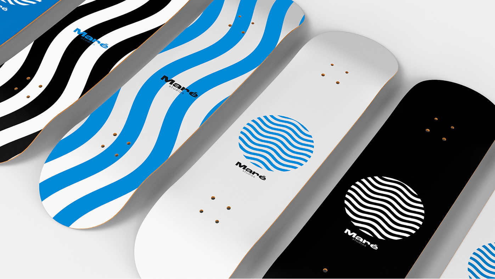

Mare Studios foi idealizado por Matheus Pereira, natural de Juiz de Fora MG.
O artista e skatista sempre esteve em movimento com as artes, desde fotografia, colagens, e a cultura do skate em sua regiao. Agucado a entrar no mundo de artistas independentes, o Studio criativo foi uma forma que encontrou para expor e expressar o seu trabalho, onde temos fotografias que detem de um teor conceitual, expressivo e tecnico. Colagens contextualizando ideias e sendo aplicadas ao cotidianos e afins.